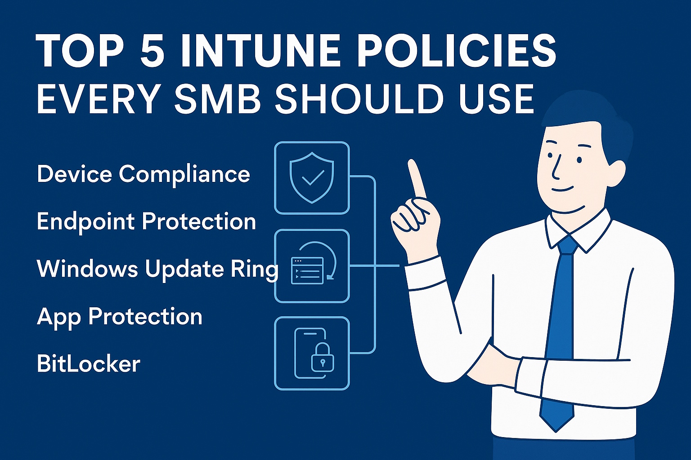

Microsoft Intune allows small businesses to centrally manage and secure all devices, whether in the office or remote.
Why Intune Matters
With built-in policy enforcement and integration with Azure AD, Intune enables SMBs to scale device management without the overhead of traditional infrastructure.
5 Key Policies to Implement
- Device Compliance Policy: Enforce encryption, password strength, and threat protection.
- Endpoint Protection: Set Defender Antivirus and firewall defaults for consistency and security.
- Windows Update Ring: Control patching and prevent user deferment or delays.
- App Protection Policy: Protect corporate data on mobile and BYOD environments.
- BitLocker Policy: Ensure all managed devices are encrypted and keys are backed up to Entra ID.
These five policies form a strong foundation for securing modern workforces while keeping IT overhead low.
← Back to Blog